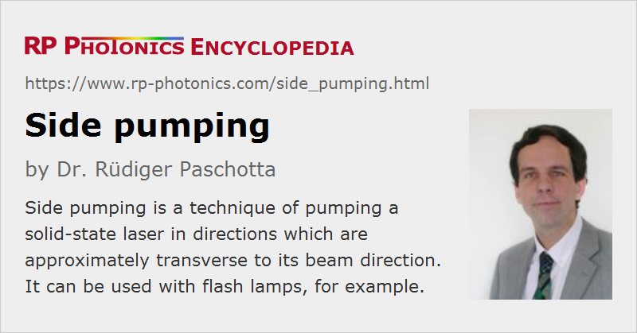

Side Pumping
Definition: a technique of pumping a solid-state laser in directions which are approximately transverse to its beam direction
Opposite term: end pumping
German: Seitenpumpen
How to cite the article; suggest additional literature
Author: Dr. Rüdiger Paschotta
Side pumping is a technique of optically pumping a laser gain medium (usually of a solid-state laser), where the pump light is injected from the side, i.e. in a direction which is roughly perpendicular to that of the laser beam. For example, Figure 1 shows a side-pumped rod, where pump light from diode bars is injected through slits in an otherwise reflecting outer surface around a laser rod. Figure 2 shows a laser setup containing a side-pumped rod. An alternative approach is pumping along the laser beam (→ end pumping).
The key advantage of side pumping is that it allows the use of pump sources with very low spatial coherence, such as arc lamps, flash lamps or high-power diode bars. Also, side pumping makes it easy to combine multiple pump sources. It is possible e.g. to pump a rod laser with several diode bars (side-by-side) which have fast axis collimation only; the total width of the emitting region can approach the rod length. Another advantage is that the absorbed pump power can be smoothly distributed in the longitudinal direction. For such reasons, side pumping is often used for high-power solid-state lasers.
Challenges arise from the fact that it is usually more difficult to achieve a high gain, good beam quality and high power efficiency with side pumping, as compared with end pumping. The essential problem is that there is gain at the edges of the laser modes, and this can cause a poor extraction efficiency and encourage the oscillation of higher-order resonator modes. Cooling of a side-pumped rod is also more complicated than in end-pumped lasers, since the outer surfaces have to be used both for cooling and for injecting pump light. For such reasons, most diode-pumped solid-state lasers for moderate or low output powers are end-pumped rather than side-pumped.

A special side pumping geometry is that of the bounce amplifier (or laser), where the laser beam experiences total internal reflection at an inner side of a laser crystal (with grazing incidence), and the pump light is injected around that reflection point. For a laser crystal material with particularly strong pump absorption (e.g. Nd:YVO4), most pump light may be absorbed within the fundamental mode of the laser resonator.
Side Pumping of Fiber Devices
There are also side pumping techniques applied to high-power fiber lasers and amplifiers based on double-clad fibers. Here, the pump light is in some way injected into the inner cladding without access to the fiber ends. For example, V-shaped grooves in the fiber allow the injection of pump light at several locations. Another possibility is to launch the pump light into additional undoped fibers, which are closely bundled with the active fiber, to which the pump light couples. All these side pumping techniques are particularly useful for high-power devices, because they make it possible to launch high pump powers while reserving access to the fiber ends for handling the laser light itself.
Note that even the ordinary use of a double-clad fiber with pump injection at one or two end faces can in some sense be regarded as side pumping, since most pump light enters the core from the pump cladding.
Questions and Comments from Users
Here you can submit questions and comments. As far as they get accepted by the author, they will appear above this paragraph together with the author’s answer. The author will decide on acceptance based on certain criteria. Essentially, the issue must be of sufficiently broad interest.
Please do not enter personal data here; we would otherwise delete it soon. (See also our privacy declaration.) If you wish to receive personal feedback or consultancy from the author, please contact him e.g. via e-mail.
By submitting the information, you give your consent to the potential publication of your inputs on our website according to our rules. (If you later retract your consent, we will delete those inputs.) As your inputs are first reviewed by the author, they may be published with some delay.
See also: lasers, solid-state lasers, lamp-pumped lasers, end pumping, optical pumping, gain media, beam quality, fiber lasers, double-clad fibers
and other articles in the categories lasers, methods
|  |
If you like this page, please share the link with your friends and colleagues, e.g. via social media:
These sharing buttons are implemented in a privacy-friendly way!